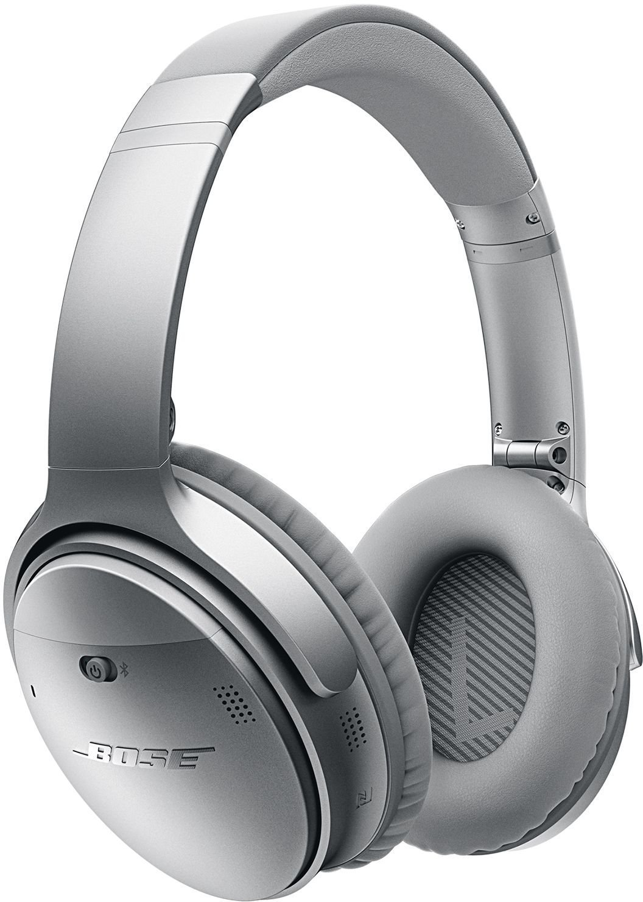
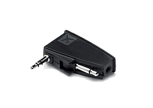
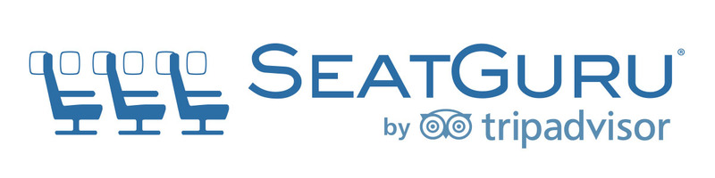
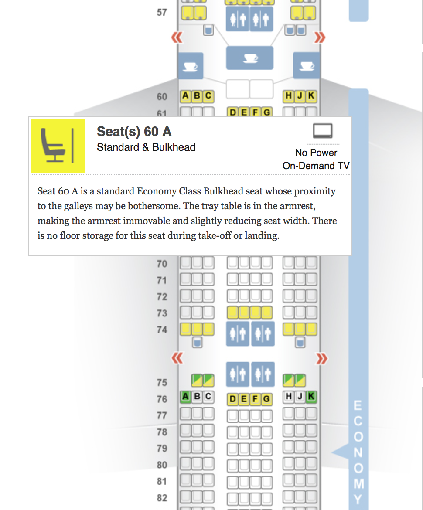
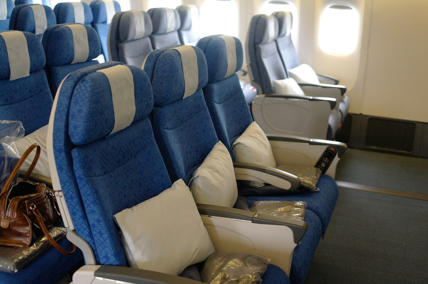
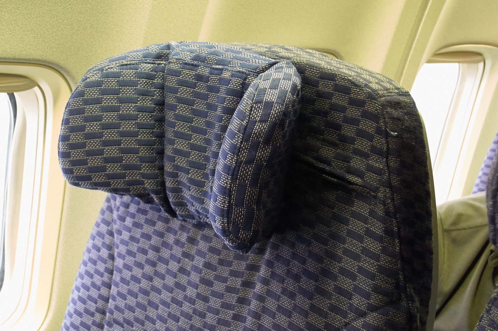
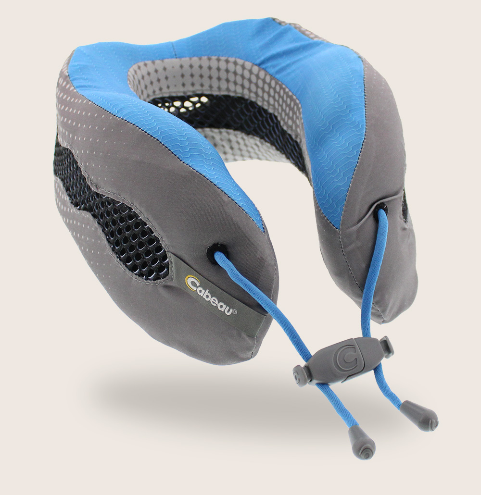
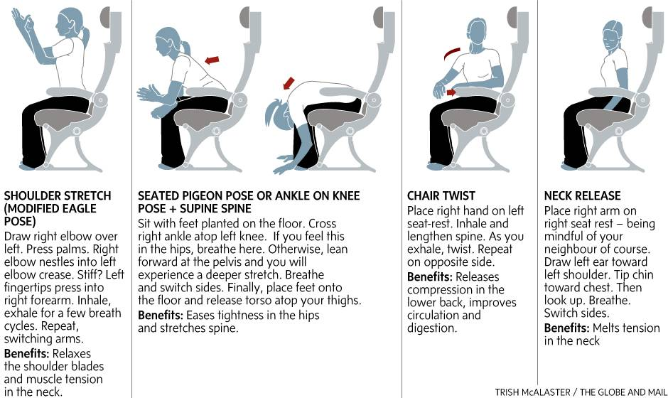

Why me?
- Worked as a consultant, travelled a lot in europe and overseas
- Like to travel in my free time as well :-)
- Disclaimer: This is a collection of things I found reading articles on how to fight jetlag or learned through experience
Agenda
- Before you travel
- On the flight
- After you arrive
Get a noise cancelling headset
- Greatly reduces stress of travel
- Watch movies
- Ignore screaming babies (and other annoying passengers)

Get a noise cancelling headset ctd.
- Don't forget the adapter, you'll need it for (Premium) Economy seats!

Reserve a seat, or at least check in early
- Some airlines let you select a seat for free after booking the flight.
- Often depends on booking class (usually Premium Economy and up)
- Usually, check in is allowed about 23 hours before your first flight leaves.
Seat selection
- Not all seats on an airplane are equally good.
- Parents with babies are usually placed in the front of a compartment because that's where the baby beds can be attached to the walls.
- Catering usually starts at the front of a compartment.
In economy, there are usually two choices of food, so the further you sit to the back, the lower the chance is that you get your choice.
- (we're talking probabilities here, don't hold me accountable ;-) )
Seat selection ctd.
- Also, there are seats that just aren't as comfortable for various reasons.
- Seatguru to the rescue!
- Seatguru shows the best and worst seats, with explanation, ratings, ...

Seat selection with Seat Guru

Wear loose fitting clothing
- You will sit (and sleep) in those clothes for 10+ hours
- You don't have to wear sweatpants, but make sure that your clothes are at least very comfortable
Take your sunglasses
- Sunglasses help to reduce the stress on the eyes when you're tired (and you will be)
- Yes, you're allowed to wear them inside when you're jetlagged
- Plus: You'll look like a rock star :-)
Adjust to new time ASAP
- Set watch / phone to destination time when you get on the plane.
- Think in "new time" when planning to sleep.
Sit
- The pillow on your seat is for your lower back, not your head!!!
- Depending on seat, and the angle of recline, additionally use a folded sweater as additional support.

Sit ctd.
- The headrest on most modern seats folds to keep your head straight when sleeping

Sit ctd.
- Get a travel pillow for additional neck support
- E.g. this one I have from "Cabeau"

Sleep
- On a long haul flight, you usually get a big meal about 90-120 minutes after takeoff, and another one 90-120 minutes before landing.
- Flight assistants will probably wake you up for your meals.
- On an 11 hour flight (FRA-SFO), you'll have ~7 hours in between
- Make sure to sleep then.
Sleep ctd.
- Usually, it's easier for people to have a "long day" instead of a "short day" with a nap in between
- Look at your departure and arrival times
- Calculate how long you would be awake if you don't sleep.
- Plan for a nap on board
Sleep ctd.
- Example:
- Get up HAM 06:00 CET
- Takeoff HAM 08:00 CET
- Landing SFO 15:00 PDT (CET+9)
- Go to bed SFO 22:00 PDT (CET+9)
- you'll be awake for 25 hours straight. Better catch a few hours of sleep before flight assistants wake you up 90-120 minutes before you land.
Sleep ctd.
- Seriously, bring an eyemask. Helps a lot since in the airplane it's never really dark
Stretch regularly
- Get up regularly, walk around and stretch
- You can also stretch in your seat

Stay hydrated
- The air is very dry
- Drink lots of water
- Drink no or little alcohol (dehydrates)
- Drink no or little coffee or tea (messes up your sleep pattern even more)
Adjust to new time
- After landing keep moving, go outside, get sunlight
- No napping!
- Go to bed late (10pm earliest)
- Get up early (8am latest)
- Look at the time a lot to remind you how late/early it is
Take it easy
- Your body is under a lot of stress
- Try to reduce stress in the first few days
- Don't do sports in the first few days
Take it easy ctd.
- If you're flexible, schedule the first few days according to the direction you travel in
- Going west, you'll be more tired in the afternoon and evenings (afternoon at your destination is night where you depart from)
- Going east, you'll be more tired in the mornings (morning at your destination is night where you depart from)
Eat regular meals
- Start eating meals following the local time, even if you're not really hungry.
- Helps convincing your body that the new timezone is the new normal
- If you're hungry during the day, eat little snacks to make sure you're hungry for regular meals
- Set alarms if you must
Trouble sleeping?
- You anticipate trouble sleeping on board or after landing
- Many people swear by Melantonin
- It's a hormone that makes you sleepy (actually produced by the body when it's dark)
- While it's freely available in the US, it's regulated in Germany
- My advice: stay away.
Trouble sleeping? ctd.
- You anticipate trouble sleeping on board or after landing
- Use a mixture of valerian and hops
- Grandma's remedy for deep sleep
- Actually recommended by my physician
Trouble sleeping? ctd.
- Lots of options in the pharmacy or a drugstore (e.g. Budni)
- Example product

Thanks, and safe travels! :-)